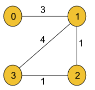
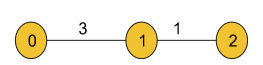

Find the City With the Smallest Number of Neighbours at a Threshold Distance: G-43
Problem Statement: There are n cities numbered from 0 to n-1. Given the array edges where edges[i] = [fromi, toi,weighti] represents a bidirectional and weighted edge between cities fromiand toi, and given the integer distance Threshold. You need to find out a city with the smallest number of cities that are reachable through some path and whose distance is at most Threshold Distance, If there are multiple such cities, our answer will be the city with the greatest number.
Note: that the distance of a path, connecting cities i and j are equal to the sum of the edges' weights along that path.
Example 1:
Input Format:
N=4, M=4,
edges = [[0,1,3],[1,2,1],[1,3,4],[2,3,1]],
distanceThreshold = 4
Result: 3
Explanation:
The adjacent cities for each city at a distanceThreshold are =
City 0 →[City 1, City 2]
City 1 →[City 0, City 2, City 3]
City 2 →[City 0, City 1, City 3]
City 3 →[City 1, City 2]
Here, City 0 and City 3 have a minimum number of cities
i.e. 2 within distanceThreshold. So, the result will be the
city with the largest number. So, the answer is City 3.
Example 2:
Input Format:
N=3, M=2, edges = [[0,1,3],[1,2,1]], distanceThreshold = 2
Result: 2
Explanation:
City 1 → City 2,
City 2 → City 1
Hence, 2 is the answer.
Solution
Disclaimer: Don't jump directly to the solution, try it out yourself first.
In order to solve this problem, we will use the Floyd Warshall algorithm (article link of Floyd Warshall). We know Floyd Warshall algorithm helps us to generate a 2D matrix, that stores the shortest distances from each node to every other node. In the generated 2D matrix, each cell matrix[i][j] represents the shortest distance from node i to node j.
After generating the 2D matrix(that contains the shortest paths) using the Floyd Warshall algorithm, for each node, we will count the number of nodes with a distance lesser or equal to the distanceThreshold by iterating each row of that matrix. Finally, we will choose the node with the minimum number of adjacent cities(whose distance is at the most distanceThreshold) and with the largest value.
Note: This 2D matrix can also be generated using Dijkstra’s algorithm. As Dijkstra’s algorithm is a single-source shortest-path algorithm, we need to calculate the shortest distances for one single node at a time. So, to create the 2D matrix we need to apply Dijkstra’s algorithm to each of the V nodes separately.
Intuition: For each node, the job is to find the shortest distances to every other node and count the number of adjacent cities(Let’s say: cntCity) whose distance is at the most distanceThreshold. Finally, the task is to choose the node with the largest value and the minimum ‘cntCity’ value.
Approach:
Initial Configuration:
Adjacency Matrix(dist): All the cells of the matrix are initially set to infinity(∞).
cntCity: Initially set to V(no. of nodes) i.e. the maximum value possible. It will store the minimum number of cities whose distance is at most distanceThreshold.
cityNo: Initially set to -1. It will store the answer i.e. the node with the largest value and the minimum ‘cntCity’ value.
The algorithm steps are as follows:
First, we will iterate over the edges, and set the value of dist[fromi][toi] and dist[toi][fromi] to weighti as the edges are bidirectional.
After having set the adjacency matrix accordingly, we will run a loop from 0 to V-1(V = no. of vertices). In the kth iteration, this loop will help us to check the path via node k for every possible pair of nodes. Basically, this loop will change the value of k in the formula(given in step 4).
Inside the loop, there will be two nested loops for generating every possible pair of nodes(Nothing but to visit each cell of a 2D matrix using the nested loop). Among these two loops, the first loop will change the value of i and the second one will change the value of j in the formula(given in step 4).
Inside these nested loops, we will apply the following formula to calculate the shortest distance between the pair of nodes:dist[i][j] =min(dist[i][j], dist[i ][k]+dist[k][j]), where i = source node, j = destination node, and k = the node via which we are reaching from i to j.
The adjacency matrix will store all the shortest paths for each node. For example, dist[i][j] will store the shortest path from node i to node j.
After that, we will count the nodes(cnt) with a distance lesser or equal to distanceThreshold and check if it is lesser than the current value of cntCity.
If it is lesser, we will update cntCity with the count of nodes and cityNo with the value of the current city.
Finally, we will return cityNo as our answer.
Note: If we need to find out the number of adjacent cities as well, we need to return cntCity-1. This is because we have included the node itself in the group of adjacent nodes whose distance is at the most distanceThreshold.Note: If you wish to see the dry run of the above approach, you can watch the video attached to this article.
Code:
#include <bits/stdc++.h>
using namespace std;
class Solution {
public:
int findCity(int n, int m, vector<vector<int>>& edges,
int distanceThreshold) {
vector<vector<int>> dist(n, vector<int> (n, INT_MAX));
for (auto it : edges) {
dist[it[0]][it[1]] = it[2];
dist[it[1]][it[0]] = it[2];
}
for (int i = 0; i < n; i++) dist[i][i] = 0;
for (int k = 0; k < n; k++) {
for (int i = 0; i < n; i++) {
for (int j = 0; j < n; j++) {
if (dist[i][k] == INT_MAX || dist[k][j] == INT_MAX)
continue;
dist[i][j] = min(dist[i][j], dist[i][k] + dist[k][j]);
}
}
}
int cntCity = n;
int cityNo = -1;
for (int city = 0; city < n; city++) {
int cnt = 0;
for (int adjCity = 0; adjCity < n; adjCity++) {
if (dist[city][adjCity] <= distanceThreshold)
cnt++;
}
if (cnt <= cntCity) {
cntCity = cnt;
cityNo = city;
}
}
return cityNo;
}
};
int main() {
int n = 4;
int m = 4;
vector<vector<int>> edges = {{0, 1, 3}, {1, 2, 1}, {1, 3, 4}, {2, 3, 1}};
int distanceThreshold = 4;
Solution obj;
int cityNo = obj.findCity(n, m, edges, distanceThreshold);
cout << "The answer is node: " << cityNo << endl;
return 0;
}
Output: The answer is node: 3
Time Complexity: O(V3), as we have three nested loops each running for V times, where V = no. of vertices.
Space Complexity: O(V2), where V = no. of vertices. This space complexity is due to storing the adjacency matrix of the given graph.
import java.util.*;
//User function template for JAVA
// User function Template for Java
class Solution {
int findCity(int n, int m, int edges[][],
int distanceThreshold) {
int[][] dist = new int[n][n];
for (int i = 0; i < n; i++) {
for (int j = 0; j < n; j++)
dist[i][j] = Integer.MAX_VALUE;
}
for (int i = 0; i < m; i++) {
int u = edges[i][0];
int v = edges[i][1];
int wt = edges[i][2];
dist[u][v] = wt;
dist[v][u] = wt;
}
for (int i = 0; i < n; i++) dist[i][i] = 0;
for (int k = 0; k < n; k++) {
for (int i = 0; i < n; i++) {
for (int j = 0; j < n; j++) {
if (dist[i][k] == Integer.MAX_VALUE ||
dist[k][j] == Integer.MAX_VALUE)
continue;
dist[i][j] = Math.min(dist[i][j], dist[i][k] + dist[k][j]);
}
}
}
int cntCity = n;
int cityNo = -1;
for (int city = 0; city < n; city++) {
int cnt = 0;
for (int adjCity = 0; adjCity < n; adjCity++) {
if (dist[city][adjCity] <= distanceThreshold)
cnt++;
}
if (cnt <= cntCity) {
cntCity = cnt;
cityNo = city;
}
}
return cityNo;
}
}
public class tUf {
public static void main(String[] args) {
int n = 4;
int m = 4;
int[][] edges = {{0, 1, 3}, {1, 2, 1}, {1, 3, 4}, {2, 3, 1}};
int distanceThreshold = 4;
Solution obj = new Solution();
int cityNo = obj.findCity(n, m, edges, distanceThreshold);
System.out.println("The answer is node: " + cityNo);
}
}
Output: The answer is node: 3
Time Complexity: O(V3), as we have three nested loops each running for V times, where V = no. of vertices.
Space Complexity: O(V2), where V = no. of vertices. This space complexity is due to storing the adjacency matrix of the given graph.
Special thanks to KRITIDIPTA GHOSH for contributing to this article on takeUforward. If you also wish to share your knowledge with the takeUforward fam, please check out this article. If you want to suggest any improvement/correction in this article please mail us at write4tuf@gmail.com